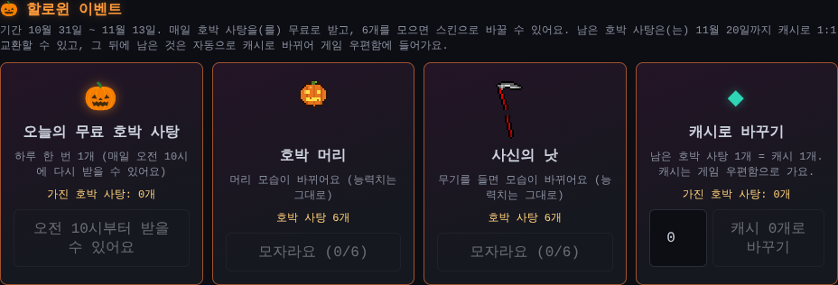

할로윈 첫날, 사탕은 오전 10시부터
10월 31일 0시, 드디어 할로윈 이벤트가 시작됐어요. 마을에는 주황 보름달이 뜨고, 몬스터는 마녀 모자를 쓰고, 게임 로고도 할로윈 로고로 바뀌었어요.
그런데 바로 상점에 들어가 보니, 오늘의 무료 호박 사탕 버튼에 "받기 기간이 끝났어요"라고 나왔어요. 사탕은 0개인데 이미 받았거나 끝난 것처럼 보였어요.
왜 그랬을까요
호박 사탕은 하루에 한 번 받을 수 있고, 그 "하루"는 한국 시간 오전 10시에 바뀌어요. 그래서 첫날은 오전 10시부터 받을 수 있어요.
- 0시부터 마을·몬스터·로고는 할로윈 모습이 돼요
- 사탕 받기는 오전 10시부터 열려요
상점은 "지금 받을 수 없다"는 것을 모두 "끝났어요"로 보여 주고 있었어요. 아직 시작 전인 오전 10시 전에도요.
이렇게 바꿨어요
- 첫날 오전 10시 전에는 버튼에 "오전 10시부터 받을 수 있어요"라고 나와요. 이벤트가 정말 끝난 뒤에만 "끝났어요"라고 나와요
- 마을 오른쪽 위 이벤트 배너도 "오전 10시부터 호박 사탕 받기"라고 알려 줘요
- 사탕은 상점에서 "무료로 받기"를 눌러야만 받아요. 전에는 받는 도중 창을 닫았을 때 상점을 다시 열면 저절로 받아졌는데, 이제는 그때도 버튼을 눌러서 받아요
- 사탕이 없을 때 "캐시로 바꾸기" 칸에 1이 들어가 있던 것도 0으로 고쳤어요

테스트로 확인했어요
- 첫날 오전 10시 전처럼 만들어서, 상점과 마을 배너에 "오전 10시부터"가 나오고 아무것도 받아지지 않는지 봤어요
- 받는 도중 창을 닫은 경우를 만들어서, 상점을 열기만 해서는 사탕이 늘지 않고, 버튼을 눌러야 1개가 들어오는지 확인했어요. 두 번 받아지지도 않아요
오전 10시가 지나고 상점에서 "무료로 받기"를 눌러 호박 사탕이 잘 들어오는 것도 확인했어요.